おうちの人へ
おうちの人も、はじめてで大丈夫です。先生役ではなく、いっしょに試して、いっしょに悩む「なかま」として付き合ってください。
- うまくいかない時間も、このキットの体験の一部です。すぐに答えを教えず、「どこがちがうと思う？」と聞いてみてください。
- お子さま向けの本編は、説明書にあります。
パソコンの準備 書き込みのやりかた AIを使うとき うまくいかないとき
だれが、何をするか
| ステップ | お子さま | おうちの人 |
|---|---|---|
| 1. 光った！ | 部品をさす・線をつなぐ・たしかめる | 小さな部品の扱いを見守る。電気は、パソコンのほか、スマホ用のUSB電源（USB充電器・モバイルバッテリー）からもらえます |
| 2. 変えてみよう | 数字・言葉・0と1の絵を書きかえる | パソコンの準備と、書き込みの操作の手伝い |
| 3. AIにお願い | やりたいことを考える・画面でたしかめる | AIの操作 |
| 4. じぶんで考える | アイデアを考えて作る | 話を聞く。必要ならステップ2・3のやりかたで手伝う |
ことば
| ことば | 意味 |
|---|---|
| ESP32（イーエスピー32） | 小さなコンピューターの部品。このキットの頭脳 |
| プログラム（スケッチ） | ボードへの命令を書いた文章。ファイル名の最後が .ino |
| 書き込み | パソコンで書いたプログラムを、ボードに送ること |
| Arduino IDE（アルドゥイーノ アイディーイー） | プログラムを書いて、書き込むための無料のソフト |
| ライブラリ | 画面やセンサーを使うための、出来合いの部品のようなプログラム |
| ポート | パソコンがボードを見つけたときの「つなぎ口」の名前（Windowsでは「COM」と数字。たとえば COM3 や COM5。番号は、パソコンやさす口によってちがいます） |
| VCC・VDD、SCL・SCK など | 部品によって、同じはたらきの足の名前がちがうことがあります。説明書の「部品の足の名前が、ちがうとき」を見てください |
| SPI（エスピーアイ） | I2C（このキットで使う、4本の線でつなぐ方式）とは別の通信の方式。MOSI・MISO・SCK・CS の4本を使う。今回は使わない。MOSI は SDI、MISO は SDO と書かれることもある |
パソコンの準備（ステップ2の前に・1回だけ）
目安は30分〜1時間です（インターネットの速さによります）。
用意するもの：パソコン（Windows または Mac）、インターネット。USBの差し込み口がない場合は、変換アダプター。
1. Arduino IDE を入れる
- Arduino の公式サイトを開く。
- 「Arduino IDE 2.x」を、お使いのパソコン（Windows / Mac）に合わせて、「DOWNLOAD」からダウンロードする。
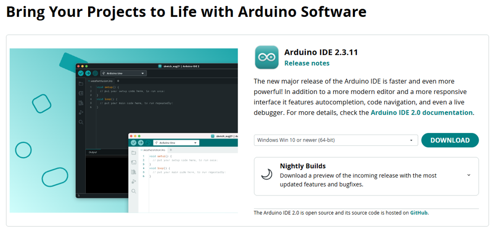
ダウンロードのページ（2026年11月の画面。バージョンの数字は、ちがうことがあります） - ダウンロードしたファイル（たとえば
arduino-ide_2.3.11_Windows_64bit.exe）をクリックして、画面の案内にしたがって、「はい」や「インストール」を選ぶ。 - 起動できたら、次へ進む。
2. ESP32 を使えるようにする
- メニューの「ファイル」→「基本設定」（Macは「Arduino IDE」→「設定」）を開く。
- 「追加のボードマネージャのURL」に、次の1行を入れて、OK を押す。
https://espressif.github.io/arduino-esp32/package_esp32_index.json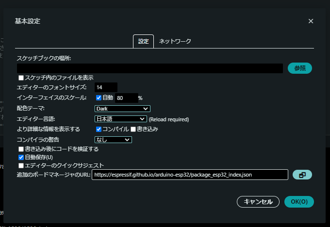
「基本設定」の画面。いちばん下の「追加のボードマネージャのURL」に、上の1行を入れます。（パソコンのフォルダ名は、黒く隠しています） - 左の「ボードマネージャ」（ボードの絵）を開き、「esp32」と検索する。
- 「esp32 by Espressif Systems」の「インストール」を押す（少し時間がかかります）。
- メニューの「ツール」→「ボード」→「esp32」→ 「ESP32 Dev Module」 を選ぶ。
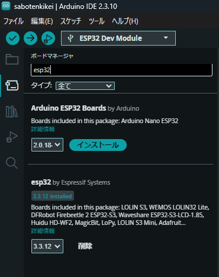
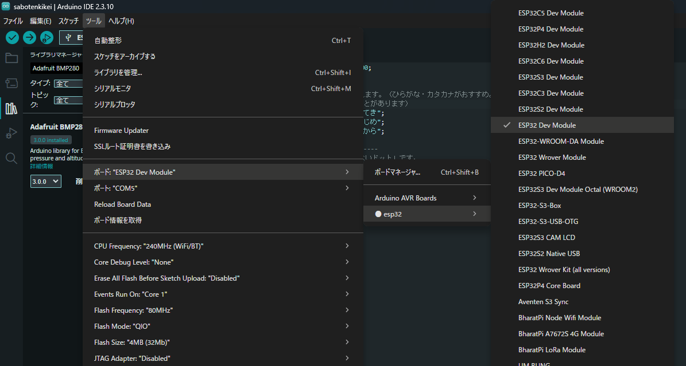
3. ライブラリを入れる
- 左の「ライブラリマネージャ」（本の絵）を開く。
- 「U8g2」と検索して、olikraus さんのものを「インストール」。
- 「Adafruit BMP280」と検索して「インストール」。「ほかに必要なライブラリも入れますか？」と聞かれたら、「すべてインストール」。
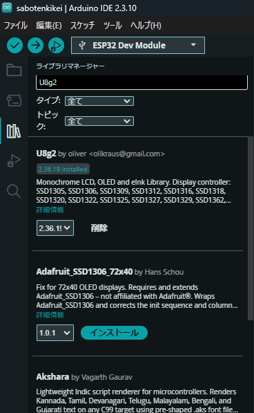
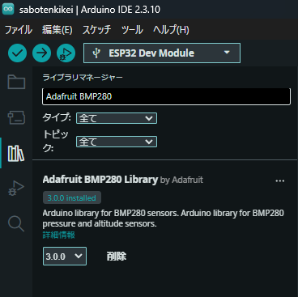
4. パソコンとボードをつなぐ
- ボードを、付属のUSBケーブルで、パソコンにつなぐ。
- 「ツール」→「ポート」で、ボードのポートを選ぶ。
- Windows：「COM3」「COM5」など、「COM」と数字の名前（番号は、パソコンによってちがいます）
- Mac：「/dev/cu.usbserial-…」などの名前
- ポートが出ないときは、「うまくいかないとき」を見てください。
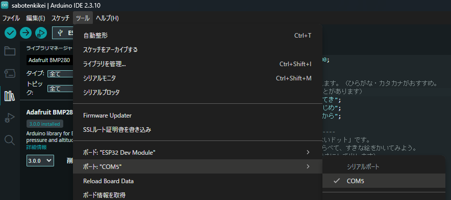
書き込みの練習：Lチカ（ためしてみよう）
パソコンの準備が終わったら、まず、ボードの小さなLEDを光らせる練習プログラム「Lチカ」で、書き込みができるかを、たしかめられます。ワイヤーは、つながなくてだいじょうぶです（ボードとUSBケーブルだけ）。
Lチカを書き込むと、ボードに入っている「さぼてんきけい」のプログラムは、いったん消えます。あとで、下の「書き込みのやりかた」で、sabotenkikei.ino を書き込めば、もとにもどります。
- ボードを、USBケーブルで、パソコンにつなぐ。
- Lチカのプログラム
blink.inoを、GitHubからダウンロードする。
Lチカのプログラム（GitHub）
ダウンロードのしかたは、下の「書き込みのやりかた」の1番と同じです（右はしの「…」から「Download」）。ダウンロードしたファイルをダブルクリックして、Arduino IDE で開きます。 - 「ツール」の「ボード」が「ESP32 Dev Module」、「ポート」が選ばれていることを確かめる。
- 左上の →（書き込み）ボタンを押す。
- 下の黒い画面に「Connecting……」と出たまま進まないときは、ボードの BOOT ボタンを、「Writing」と出るまで押し続ける。
- 書き込みが終わると、ボードの小さな青いLEDが、1秒ごとに、ついたり消えたりします。（赤いLEDは、電気が来ているしるしで、ずっとついています）
点滅したら、せいこうです！パソコンとボードの準備は、できています。青いLEDが光らなくても、書き込みが「Hard resetting」で終わっていれば、書き込み自体は、できています。ボードの電源の赤いLEDは、プログラムとは関係なく、ついています。
数字をかえてみよう
プログラムの中の、delay(1000); の数字を、かえて、もう一度、書き込んでみよう。
digitalWrite(LED_PIN, HIGH); // LEDをつける
delay(1000); // 1000 = 1秒まつ
digitalWrite(LED_PIN, LOW); // LEDを消す
delay(1000); // 1000 = 1秒まつ1000を200にすると、はやく点滅します。3000にすると、ゆっくりです。- ついている時間と、消えている時間を、べつべつの数字にしてみよう。
- かえたら、書き込みのたびに、「どうなったか」を、ノートに書いておこう。
書き込みのやりかた（ステップ2から毎回）
- プログラム
sabotenkikei.inoを開く。（開くと、下の写真のような画面になります。「かえてみよう！」の場所は、ステップ2で書きかえます）
プログラムのページ（GitHub）- GitHubのページの下のほうに、「さぼてんきけい: sketches/sabotenkikei/sabotenkikei.ino」と書いてあります。その青い文字（リンク）をクリックします。
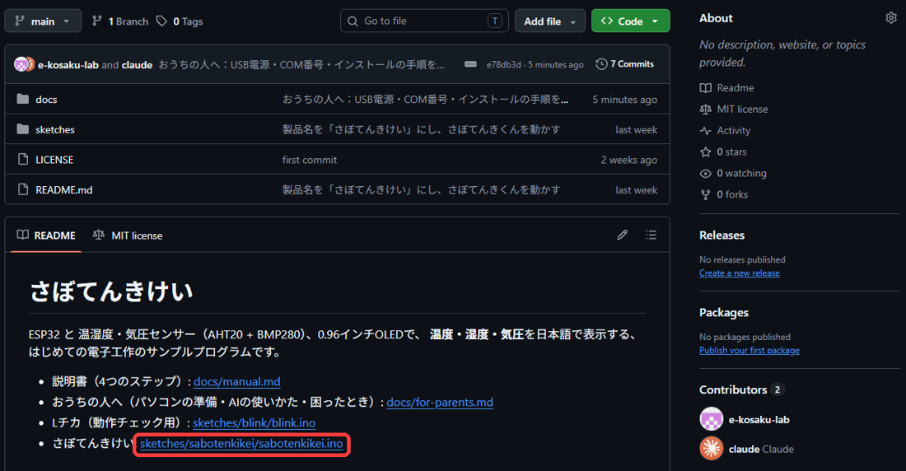
赤い枠の、青い文字をクリックします。 - 開いたページの、右はしの「…」（3つの点のマーク）をクリックして、「Download」を選びます。プログラム（スケッチ）が、ダウンロードされます。
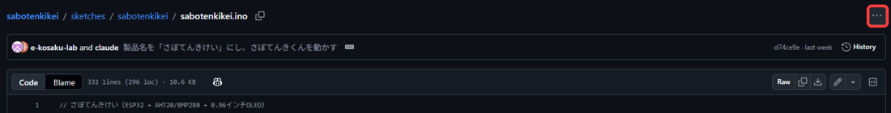
赤い枠の「…」から、「Download」を選びます。 - ダウンロードしたファイルを、ダブルクリックします。Arduino IDE（ソフト）が起動します。起動しないときは、Arduino IDE の「ファイル」→「開く」で開きます。
- 「スケッチ用のフォルダを作りますか？」と聞かれたら、「OK」を押します。
- GitHubのページの下のほうに、「さぼてんきけい: sketches/sabotenkikei/sabotenkikei.ino」と書いてあります。その青い文字（リンク）をクリックします。
- 「ツール」の「ボード」が「ESP32 Dev Module」、「ポート」が選ばれていることを確かめる。
- 画面の左上の →（書き込み）ボタンを押す。
- 下の黒い画面に「Connecting……」と出たまま進まないときは、ボードの BOOT ボタンを、「Writing」と出るまで押し続ける。
- 「Hard resetting」などと出て止まったら完了。数秒で画面が切りかわります。
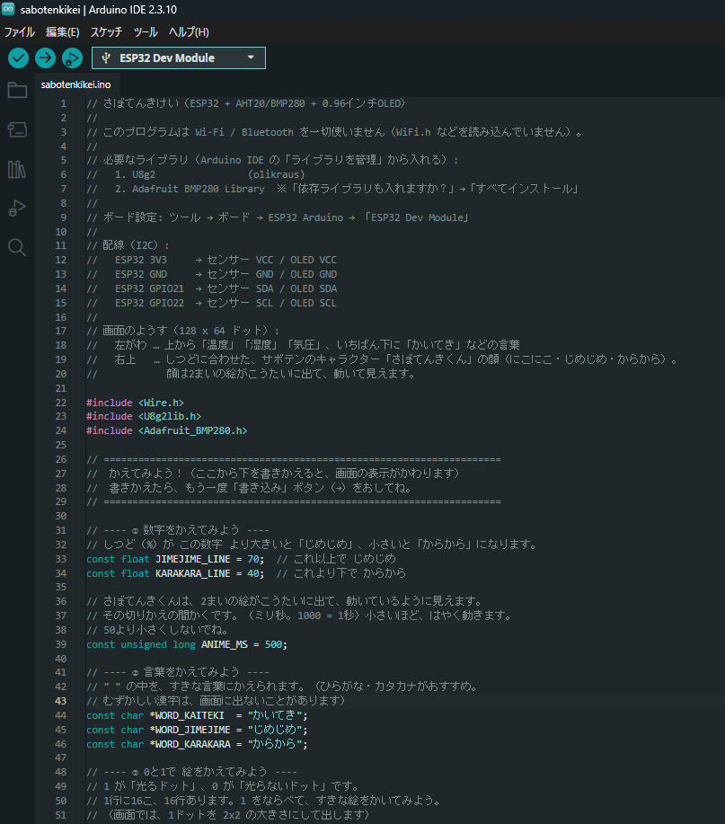
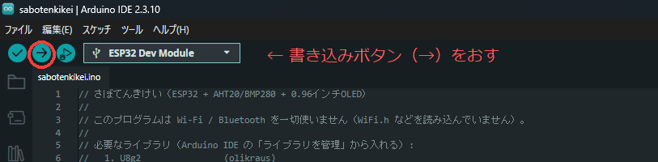
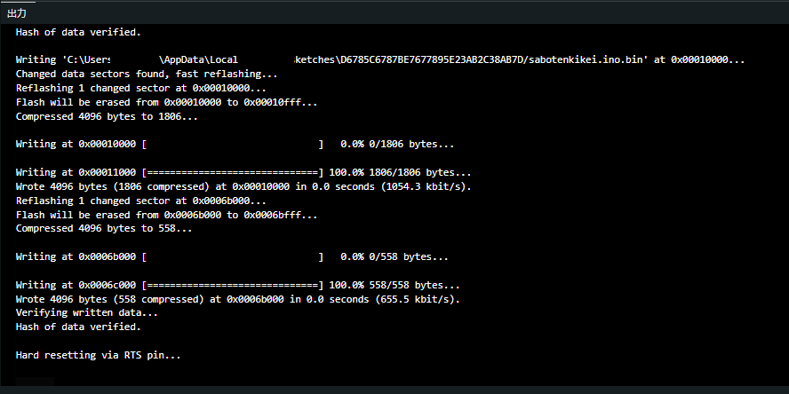
元にもどしたいとき：もう一度 sabotenkikei.ino をダウンロードして書き込めば、出荷したときと同じ表示にもどります。
書きかえたものを残したいときは、「ファイル」→「名前を付けて保存」で別の名前にしておくと安心です。
AIを使うとき（ステップ3）
ルール
- AIはおうちの人が、おうちの人のアカウントで操作してください。お子さまは「何をたのむか」を考え、結果を画面でたしかめる役です。
- AIのサービスには、利用できる年齢の条件があります。2026年11月に、各社の公式ページで確認した内容です（変わることがあるので、使う前に、各社のページでも確認してください）。
- ChatGPT（OpenAI）：13歳以上。18歳未満は、親権者などの許可が必要。
- Claude（Anthropic）：18歳以上。
- Gemini（Google）：個人のGoogleアカウントは13歳以上（国によって、ちがうことがあります）。
- 名前・住所・学校名・顔写真など、個人の情報は入力しないでください。プログラムだけを貼り付ければ十分です。
- AIの答えは、まちがっていることがあります。動かしてたしかめるまでは、正しいとは限らない、という姿勢を見せてあげてください。おうちの人がAIを使い、確かめる姿を見ること自体が、お子さまの学びになります。
たのみかた
説明書のステップ3にある書き方（プログラムぜんぶ＋やりたいこと）を、そのまま使えます。うまく動かないときは、エラーの赤い文字や、画面のようすをそのまま伝えると、直してもらいやすくなります。
よくあるつまずき
書き込みのときに赤い文字が出る
AIの答えの一部だけを貼った、または説明の文章まで貼った可能性があります。プログラムの部分だけを、全部入れかえてください。
「No such file or directory」と赤い文字が出る
ライブラリが入っていません。「パソコンの準備」の「3. ライブラリを入れる」で、U8g2 と Adafruit BMP280 を入れて、もう一度、書き込んでください。
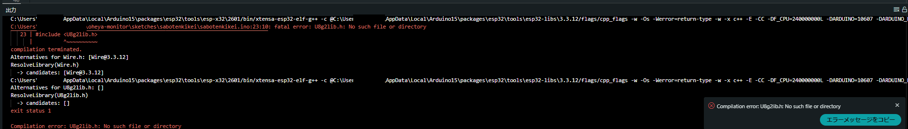
日本語が「□」や記号になる
その字が、画面の文字の一覧（フォント）に入っていません。ひらがな・カタカナにするか、AIに「U8g2の u8g2_font_b12_t_japanese2 に入っている字だけで」と伝えてください。
Wi-Fi を使うプログラムが出てきた
技適マークのないボードなので、書き込まないでください。「Wi-Fi・Bluetoothを使わずに」と付け加えて、たのみなおしてください。
うまくいかないとき
配線のまちがいは、説明書（ステップ1）の「うまくいかないときは」も見てください。
ポートが出ない・書き込めない
- USBケーブルが「充電だけ」のものではないか。付属のケーブルは通信できますが、ほかのケーブルに替えたときは、通信できるケーブルか確かめる。
- ボードに明かりがつくか。つかないときは、USBのさしこみをやりなおす。
- 別のUSBの差し込み口で試す。
- ドライバー（パソコンがボードを見つけるためのソフト）を入れる。このキットのボードは、「CP2102」というチップを使っている想定です。
CP2102のドライバー（Silicon Labs）
入れたあと、パソコンを再起動する。 - 書き込み中に「Connecting……」で止まったら、BOOTボタンを押しながら、もう一度書き込む。
赤い文字で「No such file」と出る（ライブラリが見つからない）
パソコンの準備の「3. ライブラリを入れる」の、U8g2 と Adafruit BMP280 が入っているか、確かめてください。
気圧が「---」になる
気圧センサーのアドレス（0x76 / 0x77）は、プログラム側で両方試しています。それでも出ない場合は、配線かセンサーの不良の可能性が高いです。線を差しなおしても直らなければ、ご連絡ください。
書きかえたら、画面が真っ暗になった
プログラムの書きかえで、どこかが動かなくなっている可能性があります。「元にもどしたいとき」の方法で、出荷時のプログラムを書き込んでください。部品はこわれていません。
つぎの一歩
お子さまが「もっとやりたい」と言ったら、道具や本、教室のえらび方を「つぎの一歩」のページにまとめています。
お問い合わせ
取引や、わからないことは、購入したメルカリの取引メッセージで、ご連絡ください。
ごようぼうも、お待ちしています。「こんなキットがほしい」「こんな説明があるとうれしい」「ここがわかりにくかった」など、ご意見やごようぼうは、お問い合わせフォーム（Googleフォーム）から、お送りください。すべてにお返事できないことがありますが、次のキットや説明書の参考にします。